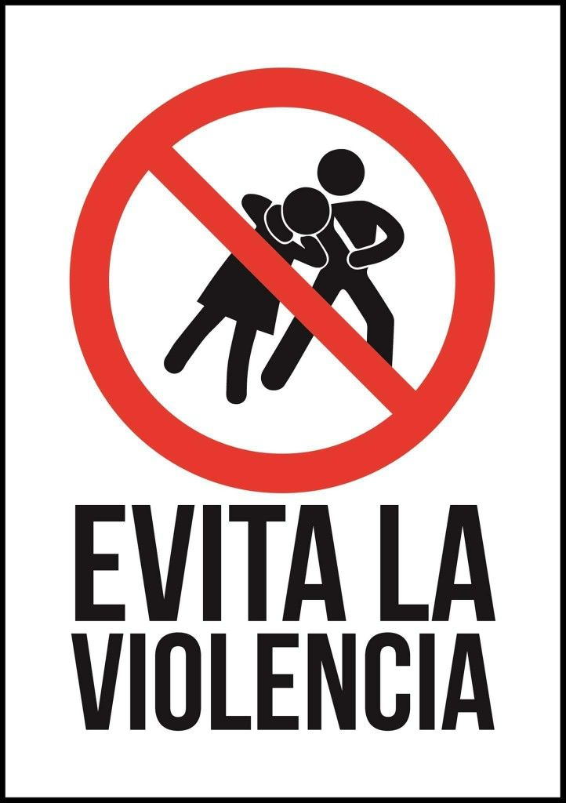

La violencia es un problema social que puede afectar la convivencia en la familia, la escuela y la comunidad.
Prevenir La violencia ayuda a crear un ambiente de respeto, seguridad y paz entre las personas.
Formas de prevenir la violencia:
Hablar, escuchar y convivir en armonía son acciones importantes para evitar la violencia.